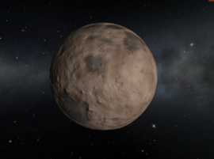
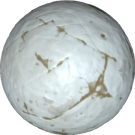

Kerbal Space Program (KSP) é um simulador de voo espacial que permite construir e pilotar foguetes e naves espaciais. Este guia vai ajudar você a começar sua jornada rumo às estrelas.
Você aprenderá desde conceitos básicos até técnicas avançadas de pilotagem, planejamento de missões e exploração espacial.

Centro de Empuxo: ponto onde a força do ar atua sobre a nave, importante para estabilidade durante o voo.
Centro de Massa: o equilíbrio da massa da nave, que deve estar alinhado com o centro de empuxo para um voo estável.
Aerodinâmica: o estudo das forças do ar sobre a nave, essencial para projetar asas e superfícies de controle.

No VAB (Vehicle Assembly Building), você monta foguetes empilhando peças, configurando estágios e adicionando carga útil.
É importante distribuir bem o peso e manter o centro de massa alinhado para garantir um voo estável.
- Use motores adequados para cada estágio.
- Configure separadores para descartar partes vazias.
- Adicione paraquedas para aterrissagem segura.

Para entrar em órbita, lance seu foguete verticalmente e depois incline-o para seguir uma trajetória curva chamada de “gravidade assistida”.
Monitore a velocidade orbital e o apoastro para garantir uma órbita estável.
- Estágios de queima gradual para economizar combustível.
- Controle de atitude com RCS ou motores menores.
- Ajuste a órbita para missões futuras.

Planeje janelas de lançamento para viajar entre planetas utilizando manobras de transferência de Hohmann.
Use o mapa de Delta-V para estimar o combustível necessário.
- Estime o tempo de viagem.
- Configure manobras de interceptação e captura.
- Monitore os recursos da nave durante a viagem.

Prepare sua nave para reentrar na atmosfera, usando escudos térmicos e reduzindo velocidade com paraquedas.
Controle a atitude para evitar aquecimento excessivo e perdas de controle.
- Posicione o escudo térmico na direção do movimento.
- Use freios aerodinâmicos e retrofoguetes se disponíveis.
- Planeje o local de pouso para segurança máxima.

Dominar esses cálculos fundamentais vai elevar seu jogo para o próximo nível:
1. Equação do Foguete (Tsiolkovsky)
// Cálculo de Delta-V total
Δv = Isp × g₀ × ln(m₀/m₁)
Onde:
Isp = Impulso específico (s)
g₀ = 9.81 m/s² (gravidade Kerbin)
m₀ = Massa inicial (kg)
m₁ = Massa final (kg)
Exemplo:
Isp = 320s
m₀ = 50t, m₁ = 10t
Δv = 320 × 9.81 × ln(50/10) ≈ 5049 m/s
2. Velocidade Orbital
// Velocidade circular orbital
v = √(μ/(R + h))
Onde:
μ = 3.5316×10¹² m³/s² (Kerbin)
R = 600km (raio Kerbin)
h = altitude (m)
Exemplo: Órbita a 80km
v = √(3.5316×10¹²/(600,000 + 80,000)) ≈ 2278 m/s
3. Transferência de Hohmann
// Δv para transferência entre órbitas
Δv₁ = √(μ/r₁) × (√(2r₂/(r₁+r₂)) - 1)
Δv₂ = √(μ/r₂) × (1 - √(2r₁/(r₁+r₂)))
Exemplo: Kerbin (r₁=700km) → Mun (r₂=12,000km)
Δv₁ ≈ 860 m/s (injeção)
Δv₂ ≈ 310 m/s (captura)
4. Força G em Manobras
// Cálculo de força G
G = a / 9.81
Onde a = aceleração (m/s²)
Exemplo: Foguete com:
Empuxo = 200kN
Massa = 10t
a = 200,000/10,000 = 20 m/s²
G = 20/9.81 ≈ 2.04 G
5. Eficiência de Estágios
// Razão de massa do estágio
λ = m₀/m₁
Onde:
m₀ = massa total estágio
m₁ = massa estágio vazio
Exemplo:
Estágio com tanque cheio = 15t
Tanque vazio = 5t
λ = 15/5 = 3
Quanto maior λ, mais eficiente
6. Tempo de Queima
// Duração da queima
t = (mᵢ - m_f) / ṁ
Onde:
mᵢ = massa inicial combustível
m_f = massa final
ṁ = taxa de consumo (kg/s)
Exemplo:
Combustível = 4000kg
ṁ = 20kg/s
t = 4000/20 = 200s (3m20s)

Este mapa mostra a quantidade estimada de Delta-V necessária para viajar entre os principais corpos do sistema Kerbol.
Ele é um recurso essencial para planejamento de missões e cálculo de combustível.

| Imagem | Nome | Tipo | Raio (km) | Distância do Kerbol (km) | Delta-v para órbita (m/s) |
|---|---|---|---|---|---|
 |
Kerbol | Estrela | 261,600 | 0 | - |
|  | Moho | Planeta | 250 | 5,263,138,304 | ~870 |
 |
Eve | Planeta | 700 | 9,832,684,544 | ~1,300 |
 |
Kerbin | Planeta | 600 | 13,599,840,256 | 3,400 |
 |
Duna | Planeta | 320 | 20,726,155,264 | ~1,450 |
| Dres | Planeta anão | 138 | 40,839,348,736 | ~430 | |
 |
Jool | Gigante gasoso | 6,000 | 68,773,560,320 | ~1,400 |
|  | Eeloo | Planeta anão | 210 | 90,118,820,352 | ~620 |

Explore as expansões oficiais para o KSP, que adicionam missões, peças e funcionalidades.
- KSP: Making History – missões históricas e editor de missões
- KSP: Breaking Ground – ciência e peças avançadas para exploração

Mods permitem expandir e personalizar o jogo. Veja como instalar:
- Baixe mods confiáveis de sites como CurseForge ou Spacedock.
- Extraia os arquivos para a pasta GameData no diretório do KSP.
- Use gerenciadores de mods como CKAN para facilitar o processo.

Use o SPH (Spaceplane Hangar) para construir aeronaves e naves espaciais reutilizáveis.
Dicas:
- Equilíbrio aerodinâmico é essencial para voo estável.
- SEMPRE mantenha o centro aerodinâmico atrás do centro de massa assim como na imagem
- Use superfícies de controle, asas e motores a jato.
- Teste em pistas e aprenda a pousar com precisão.